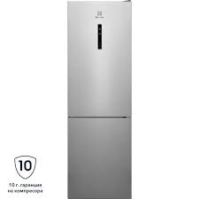
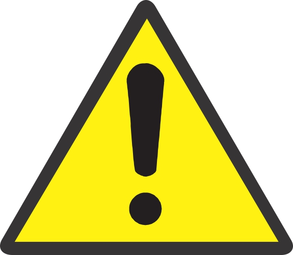
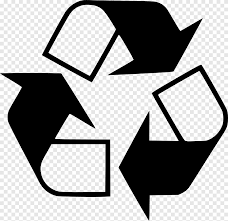

Автоматичен хладилник-фризер
171019
7082 879-02
CN(P)(el)(ef)(be)(mw)(fb)(kw)(no) 42../43../47../48..
Производителят постоянно работи над усъвършенстването на всички типове и модели. Молим за Вашето разбиране, че си запазваме правото на промени във формата, обзавеждането и техническото изпълнение. За да
1 / BG
/ BG
Горещата пара може да доведе до наранявания. За размразяване не използвайте електрически нагревателни уреди или уреди за почистване с пара, открит пламък или спрей за размразяване. - Не отстранявайте леда с остри предмети.
При отваряне и затваряне на вратата не бър- кайте в пантата. Може да си притиснете пръстите.
|
Символът може да се намира върху компресора. Той се отнася до маслото в компресора и указва следната опасност: Може да бъде смъртоносно при поглъщане или попадане в дихателните пътища. Това указание е от значение само за рециклирането. При нормална експлоатация не съществува никаква опасност. |
 |
Символът се намира върху компресора и указва опасност от пожароопасни вещества. |
 |
Този или подобен стикер е разположен от задната страна на уреда. Той се отнася до панелите от пяна във вратата и/или в корпуса. Това указание е от значение само за рециклирането. Не отстранявайте стикера. |
обозначава непосредствено опасна ситуация, която ще причини смърт или тежки телесни наранявания, ако не бъде избегната. | обозначава опасна ситуация, която може да причини смърт или тежки телесни наранявания, ако не бъде избегната. | обозначава опасна ситуация, която може да причини леки или средни телесни наранявания, ако не бъде избегната. | обозначава опасна ситуация, която може да доведе до материални щети, ако не бъде избегната. | обозначава полезни указания и съвети. |
Опасност от повреди поради кондензирала вода! u Не поставяйте уреда непосредствено до друг хладилник/ фризер.
При поставяне на няколко уреда един до друг оставете разстояние от 100 mm между уредите. Ако това разстояние не се спази, между страничните стени на уредите се образува конденз, фиг. 13.
При констатиране на повреди по уреда незабавно се обърнете към доставчика, още преди да го включите.
Подът на мястото на поставяне на уреда трябва да бъде хоризонтален и равен.
Не поставяйте уреда в зони с директно слънчево лъчение, близо до печки, радиатори и подобни.
Поставяйте уреда със задната страна към стената, а при използване на приложените разпънки за стена (вижте по- долу) - винаги заедно с тях директно към стената.
Уредът може да се премества само в незаредено състояние.
Основата на уреда трябва да е на същата височина като на околния под.
Не поставяйте уреда без помощник.
Колкото повече охлаждащо вещество има в уреда,толкова по-голямо трябва да бъде помещението, в което се намира уредът. В прекалено малки помещения при теч може да се образува запалима смес от газ и въздух. За 8 g охлаждащо вещество помещението за поставяне трябва да бъде май- малко с размери 1 m�. Информация за съдържащото се охлаждащо вещество има на идентификационната табелка във вътрешността на уреда.
Извадете свързващия кабел от задната страна на уреда. При това махнете кабелния държател, иначе възникват шумове от вибрация! u Отлепете защитното фолио от външната страна на корпуса и от декоративните лайстни. u Отстранете всички транспортни осигуровки. За да се постигне декларираната консумация на енергия, трябва да се използват детайлите за отстояние от стената, които са приложени към някои уреди. Чрез тях дълбочината на уреда се увеличава с ок. 35 mm. Уредът е напълно функционален и без използване на елементите за отстояние от стената, но има малко по-висок разход на енергия.
Фиг. 9 При уред с приложени детайли за отстояние от стена, монтирайте детайли отляво и отдясно горе от задната страна на уреда. u Изхвърлете опаковката. (вижте 4.5) u Фиг. 4 Нивелирайте уреда стабилно и хоризонтално чрез регулируемите крачета (A) с доставения ключ и с помощта на нивелир. След това подпрете вратата: Развийте крачето при лагерната стойка (B), докато опре в пода, след това го завъртете още 90°.
Почистете уреда (вижте 6.2). Ако уредът се постави в много влажна среда, върху външната страна на уреда може да кондензира вода. u Грижете се постоянно да има добра вентилация на мястото на поставяне.
Неправилно свързване! Опасност от пожар. u Не използвайте удължителни кабели. u Не използвайте разпределителни лайстни.
Видът ток (променлив ток) и напрежението на мястото на монтаж трябва да отговарят на параметрите, посочени върху идентификационната табелка (вижте Общ преглед на уреда). Контактът трябва да бъде правилно заземен и електрически обезопасен. Токът за задействане на предпазителя трябва да е между 10 A и 16 A. Контактът трябва да бъде лесно достъпен, за да може при авария уредът бързо да се изключи от мрежата. Той трябва да се намира извън зоната на задната страна на уреда.
Проверете електрическото свързване. u Включете мрежовия щепсел.
на управляващата електроника са изключени. След настройката на режима Шабат вече не е нужно да се тревожите за контролни лампи, цифри, символи, индикации, алармени съобщения и вентилатори. Цикълът на размразяване работи само за предварително зададеното време, без да се взема под внимание използването на хладилника. След спиране на тока уредът автоматично се включва отново в режим Шабат. Списък на сертифицираните Star-K уреди ще откриете на www.star-k.org/appliances.
Опасност от хранително отравяне! Ако токът спре, докато режим Шабат е активиран, това съобщение не се запаметява. Ако токът бъде възстановен, уредът продължава да работи в режим Шабат. Когато той завърши, не се издава съобщение относно спирането на тока в индикацията на температурата. Когато по време на режима Шабат е възникнало спиране на тока: u Проверете качеството на хранителните продукти. Не консумирайте размразили се хранителни продукти!
- Всички функции са блокирани до изключването на Sabbath Mode. - Ако функции като SuperFrost, SuperCool, вентилация и др. са активирани при включването на Sabbath Mode, те остават активни. - Не се издават звукови сигнали и на температурния индикатор не се показват никакви предупреждения/ настройки (напр. аларма за температурата, аларма за вратата). - Вътрешното осветление е деактивирано.
Опасност от нараняване от парчета стъкло! Бутилки и кутии с напитки могат да се счупят при замръзване. Това важи особено за газираните напитки.
Фризерна част: Влагата се отлага по изпарителя, периодично се разтопява и изпарява.
- Неправилно настроена температура. u Настройте по-ниска и проверете след 24 часа.
ПРЕДУПРЕЖДЕНИЯ: Опасност от нараняване поради токов удар!